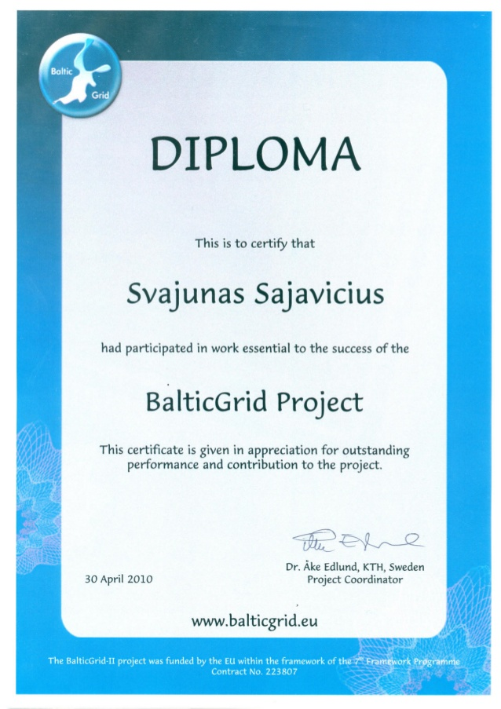
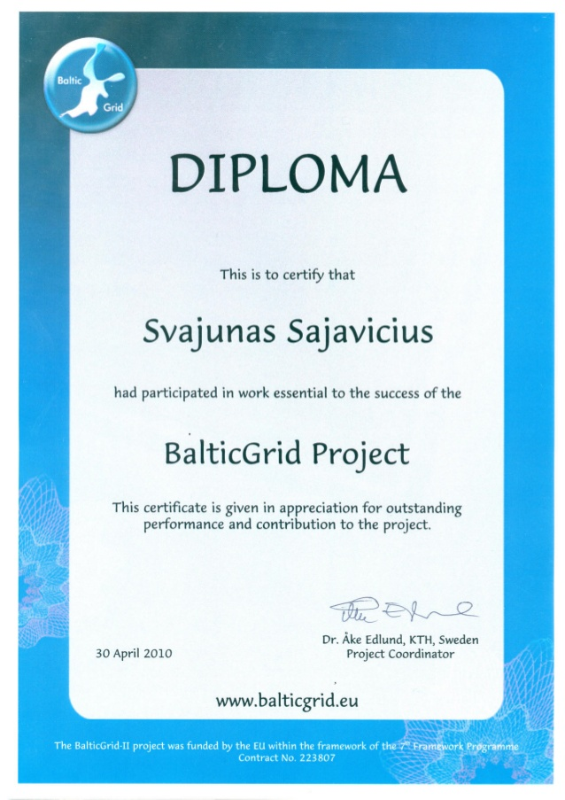

Research interests
- Discretization methods for PDEs (isogeometric analysis, meshless methods)
- Computer aided geometric design (applications in isogeometric analysis)
Publications
Submitted preprints
- S. Sajavičius. AdagradLSPIA: Integrating adaptive optimization into least squares progressive iterative approximation, 2025. [arXiv:2501.10170]
Journal publications
- S. Sajavičius. Hyperpower least squares progressive iterative approximation. Journal of Computational and Applied Mathematics, 422, 2023, 114888. https://doi.org/10.1016/j.cam.2022.114888 [Download PDF]
- S. Sajavičius, T. Takacs. Imposing nonlocal boundary conditions in Galerkin-type methods based on non-interpolatory functions. Computers and Mathematics with Applications, 80(12), 2020, pp. 2877–2895. https://doi.org/10.1016/j.camwa.2020.09.016 [Download PDF]
- J. Martín-Vaquero, S. Sajavičius. The two-level finite difference schemes for the heat equation with nonlocal initial condition. Applied Mathematics and Computation, 342, 2019, pp. 166–177. https://doi.org/10.1016/j.amc.2018.09.025 [Download PDF]
- S. Sajavičius. Radial basis function collocation method for an elliptic problem with nonlocal multipoint boundary condition. Engineering Analysis with Boundary Elements, 67, 2016, pp. 164–172. https://doi.org/10.1016/j.enganabound.2016.03.010 [Download PDF]
- S. Sajavičius. Radial basis function method for a multidimensional linear elliptic equation with nonlocal boundary conditions. Computers and Mathematics with Applications, 67(7), 2014, pp. 1407–1420. https://doi.org/10.1016/j.camwa.2014.01.014 [Download PDF]
- S. Sajavičius. Optimization, conditioning and accuracy of radial basis function method for partial differential equations with nonlocal boundary conditions—A case of two-dimensional Poisson equation. Engineering Analysis with Boundary Elements, 37(4), 2013, pp. 788–804. https://doi.org/10.1016/j.enganabound.2013.01.009 [Download PDF]
- S. Sajavičius. Stability of the weighted splitting finite-difference scheme for a two-dimensional parabolic equation with two nonlocal integral conditions. Computers and Mathematics with Applications, 64(11), 2012, pp. 3845-3899. DOI: https://doi.org/10.1016/j.camwa.2012.08.009 [Download PDF]
- S. Sajavičius. On the eigenvalue problems for differential operators with coupled boundary conditions. Nonlinear Analysis: Modelling and Control, 15(4), 2010, pp. 493-500. https://doi.org/10.15388/NA.15.4.14320 [Download PDF]
- S. Sajavičius. On the eigenvalue problems for finite-difference operators with coupled boundary conditions. Šiauliai Mathematical Seminar, 5(13), 2010, pp. 87-100 [Download PDF]
- S. Sajavičius, M. Sapagovas. Numerical analysis of the eigenvalue problem for one-dimensional differential operator with nonlocal integral conditions. Nonlinear Analysis: Modelling and Control, 14(1), 2009, pp. 115-122. https://doi.org/10.15388/NA.2009.14.1.14535 [Download PDF]
Book chapter
- S. Sajavičius, B.Jüttler, J. Špeh. Template mapping using adaptive splines and optimization of the parameterization. In: C. Giannelli and H. Speleers (eds.) Advanced Methods for Geometric Modeling and Numerical Simulation, Springer INdAM series, Vol. 35, pp. 217–238, Springer, Cham, 2019. https://doi.org/10.1007/978-3-030-27331-6_9 [Download PDF]
Conference publications
- S. Sajavičius. The splitting finite-difference scheme for two-dimensional heat conduction equation with four nonlocal integral conditions. In: J. Eberhardsteiner, H. J. Böhm, F. G. Rammerstorfer (eds.) CD-ROM Proceedings of the 6th European Congress on Computational Methods in Applied Sciences and Engineering (ECCOMAS 2012), Vienna, Austria, September 10–14, 2012, CD-ROM, Paper ID 1081, 12 p., Vienna, Austria, 2012.
- S. Sajavičius. On the stability of fully-explicit finite-difference scheme for two-dimensional parabolic equation with nonlocal conditions. In: B. Murgante, O. Gervasi, A. Iglesias, D. Taniar, B. O. Apduhan (eds.) Computational Science and Its Applications – ICCSA 2011, International Conference, Santander, Spain, June 20-23, 2011, Proceedings, Part IV. Lecture Notes in Computer Science, 6785, pp. 1-10, Springer-Verlag Berlin Heidelberg, 2011. https://doi.org/10.1007/978-3-642-21898-9_1
- S. Sajavičius. On the stability of locally one-dimensional method for two-dimensional parabolic equation with nonlocal integral conditions. In: J. C. F. Pereira, A. Pereira, J. M. C. Sequeira (eds.) Proceedings of the V European Conference on Computational Fluid Dynamics (ECCOMAS CFD 2010), Paper ID 01668, 11 p., Lisbon, Portugal, 2010.
- S. Sajavičius. On the stability of alternating direction method for two-dimensional parabolic equation with nonlocal integral conditions. In: V. Kleiza, S. Rutkauskas, A. Štikonas (eds.) Proceedings of International Conference Differential Equations and Their Applications (DETA 2009), pp. 42-48, Technologija, Kaunas, Lithuania, 2009.
Technical reports
- S. Sajavičius, B.Jüttler and J. Špeh. Template mapping using adaptive splines and optimization of the parameterization. NFN Technical Report No. 78, 2019 [Download PDF]
- Optimization framework integrating the volumetric approaches, adaptive refinement procedures and the new shape deformation techniques. MOTOR Project D5.2, 2018 [Confidential]
- Report on shape deformation techniques based on volumetric approaches. MOTOR Project D2.4, 2018 [Download PDF]
- Report and prototype software for geometry-aware block structuring and volume parameterization MOTOR Project D2.3, 2017 [Download PDF]
- Report and prototype software for multivariate adaptive spline technology. MOTOR Project D2.1, 2016 [Download PDF]
Extended abstracts
- S. Sajavičius. The splitting finite-difference schemes for two-dimensional parabolic equation with nonlocal weighted integral conditions. In: S. Repin, T. Tiihonen, T. Tuovinen (eds.) Proceedings of ECCOMAS Thematic Conference on Computational Analysis and Optimization (ECCOMAS CAO 2011), pp. 81–84, Jyväskylä, Finland, 2011.
- S. Sajavičius. The splitting finite-difference schemes for two-dimensional parabolic equation with nonlocal conditions. In: A. Eriksson and G. Tibert (eds.) Proceedings of NSCM23: the 23rd Nordic Seminar on Computational Mechanics / Technical report 2010:07, pp. 345-348, Stockholm, Sweden, 2010.
- S. Sajavičius. The stability of alternating direction method for two-dimensional parabolic equation with nonlocal integral conditions. In: E. Lund, L. Damkilde, A. S. Andersen, E. Kristensen (eds.) DCE Technical Memorandum No. 11 / Proceedings of the Twenty Second Nordic Seminar on Computational Mechanics, pp. 87-90, Aalborg, Denmark, 2009.
Participation in international conferences
- Virtual Isogeometric Analysis 2020 (VIGA 2020), August 11–12, 2020 (online)
- 9th International Congress on Industrial and Applied Mathematics (ICIAM 2019), 15–19 July, 2019, Valencia, Spain
- 9th International Conference on Mathematical Methods for Curves and Surfaces (MMCS9), 23–28 June, 2016, Tønsberg, Norway
- Equadiff'13 conference, 26–30 August, 2013, Prague, Czech Republic
- Congress on Numerical Methods in Engineering (CMN 2013), 25–28 June, 2013, Bilbao, Spain
- 6th European Congress on Computational Methods in Applied Sciences and Engineering (ECCOMAS 2012), 10–14 September, 2012, Vienna, Austria
- International Conference on Applied Mathematics and Approximation Theory (AMAT2012), 17–20 May, 2012, Ankara, Turkey
- 7th International Congress on Industrial and Applied Mathematics (ICIAM 2011), 18–22 July, 2011, Vancouver, BC, Canada
- 16th International Conference Mathematical Modelling and Analysis, 25–28 May, 2011, Sigulda, Latvia
- 23rd Nordic Seminar on Computational Mechanics, 21–22 October, 2010, Stockholm, Sweden
- V European Conference on Computational Fluid Dynamics (ECCOMAS CFD 2010), 14–17 June, 2010, Lisbon, Portugal
- 15th International Conference Mathematical Modelling and Analysis, 26–29 May, 2010, Druskininkai, Lithuania
- 22nd Nordic Seminar on Computational Mechanics, 22–23 October, 2009, Aalborg, Denmark
- International Conference Differential Equations and Their Applications dedicated to Professor M. Sapagovas 70th anniversary, 10–12 September, 2009, Panevėžys, Lithuania
- 14th International Conference Mathematical Modelling and Analysis, 27–30 May, 2009, Daugavpils, Latvia
Projects
- MOTOR – Multi-ObjecTive design Optimization of fluid eneRgy machines (funded by European Commission through Horizon 2020 programme, project reference: 678727), 2015–2018
More information: CORDIS

-
BalticGrid-II project
  (funded by the EU within the framework of the 7th Framework Programme, Contract No. 223807), 2010
 (funded by the EU within the framework of the 7th Framework Programme, Contract No. 223807), 2010
- Development of Bioelectrocatalysis for Synthesis and Analysis (BIOSA), #N–08007, Lithuanian State Science and Studies Foundation, 2008
- Computer Simulation of the Behavior of Heterogeneous Processes and Systems (MODELITA), #C–03048, Lithuanian State Science and Studies Foundation, 2005, 2006